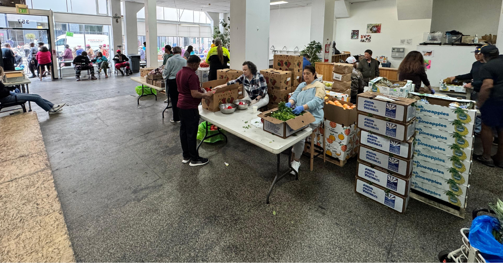
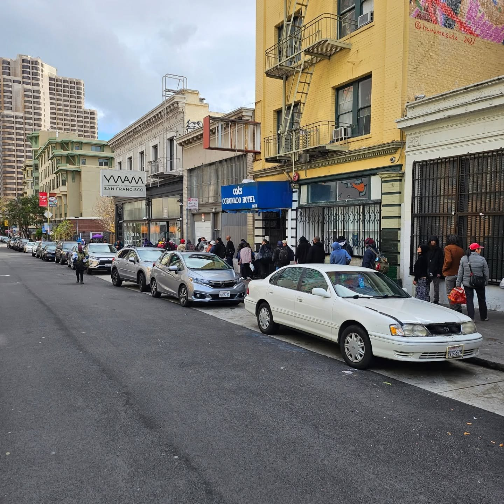
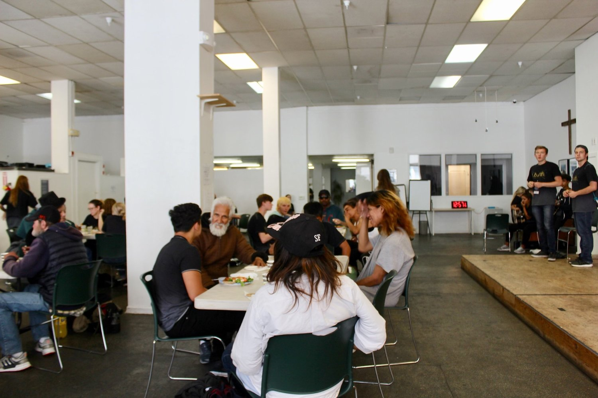

News & Events

Thank you, Tim and Karol.
After 18 faithful years leading YWAM in the Tenderloin, Tim and Karol have handed on the leadership of YWAM San Francisco. They’re still part of our staff, now focusing on leading YWAM San Francisco Bay Area. We’re deeply grateful for their years of love and service on Ellis Street.
Read the updateCome and join us.
Everyone is welcome at 357 Ellis Street.
Community Game Night
Bring your friends, a game to share and some healthy competition, or borrow one of ours. All ages welcome, every Monday evening.
Lunch & Learn
A short update on ministry in the Tenderloin from our director, followed by a time of prayer together. Dates are announced on our events calendar.
Community events
Christmas lunch, special community nights and celebrations through the year.
Stories from the street.

Keeping the lights on after hours
When it rains in the Tenderloin, the Ellis Room stays open from 9 pm to 5 am for friends with nowhere dry to stay.

Church that shows up
Hot chocolate, cookies and worship on the sidewalk every Sunday morning.

Feeding our city with hope
More than 300 people a week, met with fresh food and warm smiles.

Hot chocolate
A simple ministry making a real impact, one conversation at a time.

209 neighbors at Christmas lunch
Thank you to the many volunteers who came and helped serve one long table.

Seniors of the TL
Stories from some of the Tenderloin’s longest-standing residents.